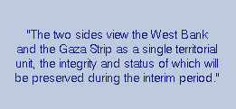
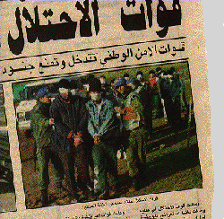
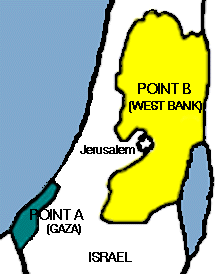

|
|
In the preamble to Sept 28, 1995 Agreement the Israeli and Palestinian negotiators reaffirm "their determination to put an end to decades of confrontation and to live in peaceful coexistence, mutual dignity and security, while recognizing their mutual legitimate and political rights." In this context and with these goals before them leaders of the two peoples set out the terms of the agreement. The world community watched with high expectations as then Israeli prime minister Yitzhak Rabin and Palestinian president Yasser Arafat finalized the agreement with their signatures on a sunny September day in Washington, DC. From the first days it was clear that the success of the agreement relied on the ability to translate aspirations to reality, and to transfer words in Washington to experiences in the occupied Palestinian territories and Israel.
In early readings many argued that the agreement would resolve the (by now infamous) "Gaza students issue" for once and for all. For starters, the agreement echoed the words of the Declaration of Principles, signed two years earlier, by indentifying the West Bank and Gaza as a "single territorial unit" of which "the integrity and status will be preserved" (Article XI:1). While physical realities obscure the exact meaning of this assertion, i.e. the "unit" remains divided into two distinct districts, the clause would seem to impact the ability of residents of the West Bank and Gaza to temporary change their place of residence. Accordingly, the situation for Gaza students wishing to reside temporarily in the West Bank for studies could, potentially, more closely resemble the situation for a student from Nablus wishing to study and reside in Ramallah, or a Parisian student wishing to study in Marseilles. It would seem from this clause that the act of residing in Ramallah to study at Birzeit University would no longer require an explicit permit for a Gaza student, any more than it would for a Nablusi student.
At the time of the signing–about two weeks into the first semester of the 1995-96 academic year–no permits had been issued for any Gaza students to study and reside in the West Bank. Less than one month later, two Birzeit University students from Gaza were "caught" studying "illegally" in the West Bank, arrested and deported to Gaza.
On March 28, 1996, the Israeli military conducted a raid on students of unprecedented scale against Birzeit University in which they arrested nearly 300 students. (See newspaper photo at left.) In the raid nearly 40 Gaza students were arrested and, unlike the other students of whom the vast majority were released by sundown, the Gaza students were (at best) sent to Gaza marked "deported" or (at worst) detained for interrogation.
Several of the students rounded up by the Israeli military on 28 March were transferred to Ashkelon Prison and for interrogation. One in particular was subjected to severe ill-treatment and torture during interrogation in the Ashkelon Prison during the first week of his detention. The violence against him was halted only by an injunction from the Israeli High Court of Justice. Under interrogation, the student admitted that he had come to the university without permission. On 20 May 1996, the Israeli Military Court in Gaza sentenced him to one and one-half years in prison on two charges—1) traveling to his university without a permit, and 2) staying in the West Bank after students were ordered to return to Gaza in March. The experiences of this mathematics student from Gaza City, exemplify the situation for many Gaza students.
The student came without a permit because he has been banned from obtaining a permit to study since 1993-94 academic year. He has no prior record of detention or charges against him by the Israeli authorities. The student illustrated his determination to continue his studies by taking courses at the Islamic University in Gaza during the periods when he has been blocked from campus. To add insult to injury, he came to the university during a period in which Israeli authorities in the Ramallah office of the Civil Administration (unofficially and orally) informed the students that even "banned" (i.e. those formally denied permits) students should come, as no more students would be rounded up and transferred to Gaza. So he came, hedging his bets on the implementation of the Oslo Accords.
Imagine spending six months in prison for residing in the wrong part of a "single territorial unit."
For Gaza Students, residence in the West Bank only constitutes one-half of the problem, the second half, namely getting from Point A (Gaza) to Point B (the West Bank), poses nearly the same level of obstacle. The interim agreement signed in September 1995 in Washington, DC, however, seemed to resolve this dilemma as well by setting out the terms of a "safe passage" system between the West Bank and Gaza for persons and goods. The exact provisions states,
"There shall be a safe passage connecting the West Bank with the Gaza Strip for movement of persons, vehicles and goods, as detailed in this Article. Israel will ensure safe passage for persons and transportation during daylight hours (from sunrise to sunset) or as otherwise agreed by the [joint coordination committee], but in any event not less than 10 hours a day." (Article XXIX, Clauses 1a-b)
The agreements states that there will be three separate routes for "safe passage" and delineates the three days a year that Israel will close all three routes (Yom Kippur, Israel’s Memorial Day, and Israel’s Independence Day). The agreement anticipates the potential need to close a route to address security concerns and responds explicitly. "Israel may, for security or safety reasons, temporarily halt the operation of a safe passage route or modify the passage arrangements while ensuring that one of the routes is open for safe passage"(Annex 1; Article X; Clause 4c).
The agreement explicitly deals with the issue of persons considered by Israel to pose a high security risk by arranging for shuttle buses which are to operate seven hours per day, two days each week (Annex 1; Article X; Clause 2e).
Despite these extensive provisions, the period following Oslo has witnessed a deterioration in the freedom of movement between the two regions rather than the opposite.
Students are not the only members of the academic community effected. Birzeit University alone employs six professors from Gaza, including the Dean of the Faculty of Engineering, Dr. Hani Nijim. Dr. Nijim, a professor of electrical engineering, received his training at Leichester University (UK). In February 1995, Dr. Nijim, like all lecturers and most of the Gaza students at Birzeit University, possessed all of the required permits when he went home to celebrate Aid al-Fitr, the feast marking the end of Ramadan, with his family.
Toward the end of the week-long holiday, the first of an unprecedented series of suicide bombings was carried out in Jerusalem. In a week’s time 59 people were killed by bomb attacks carried out by supporters of the extremist Islamist opposition. In retaliation Israel imposed far-reaching measures of collective punishment, including the imposition of "full closure" and the cancellation of all permits.
While it is recognized that Israeli authorities have a responsibility to respond to such attacks and to prevent their recurrence, one of the basic principles of international law demands individual responsibility for crimes. Only those responsible for crimes may be punished—not their families, not their children, and not their community as a whole.
Dr. Nijim only had a valid permit for one month of the entire four-month second semester. On other occasions, Dr. Nijim has been forced to "smuggle" himself to the West Bank—violating regulations and risking arrest and punishment, in order to take up his responsibilities. Dr. Nijim does not have a security file, nor have Israeli authorities ever raised "security concerns" against him personally, rather he is caught in measure of collective punishment that stands in the face of progress toward a lasting peace.
Dr. Nijim found himself stuck in Gaza from then until the middle of the summer. For the entire second semester the Faculty of Engineering functioned without its dean.
join the campaign
- work for peace in the middle east -
Click here to find out more about how you can join the campaign